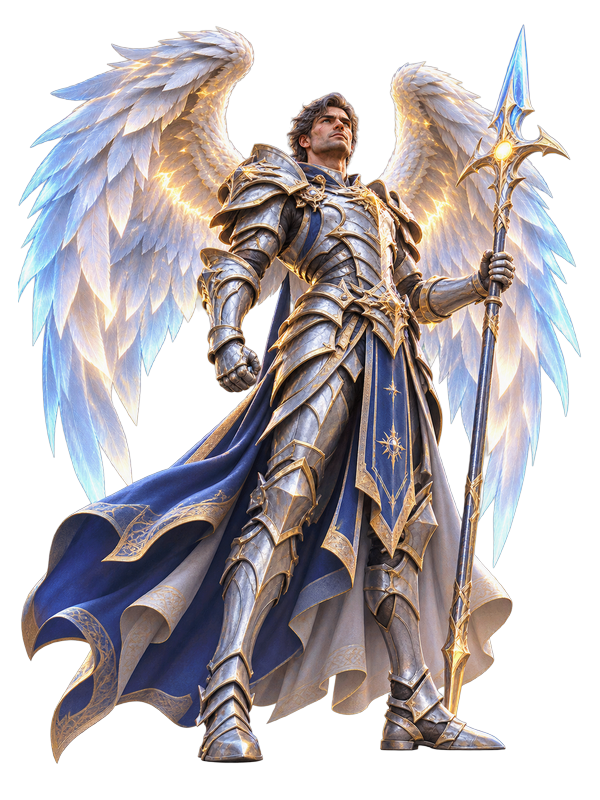

Home › Cup of Game › AION 2
Cup of Game · AAAAION 2: il ritorno del volo e dell'RvR su Unreal Engine 5

Illustrazione originale ispirata al gioco, non artwork ufficiale.
Il cielo non è uno sfondo: è il campo di battaglia. Il ritorno di Aion passa da un mondo enorme e da una guerra tra fazioni che non chiede abbonamento.
Analisi editoriale: dati e prezzi verificati sulle fonti ufficiali al 07/11/2026; prezzi indicativi, giudizi redazionali.
AION 2 è il MMORPG di NCSOFT che riporta in scena il conflitto tra fazioni e il volo come parte del combattimento, su Unreal Engine 5. È disponibile su PC dal 5 ottobre 2026, è free-to-play e si gioca su Steam o tramite la piattaforma PURPLE dello stesso editore.
Cosa è confermato
- Uscita: 5 ottobre 2026, già disponibile.
- Piattaforme: PC Windows, su Steam e su PURPLE.
- Genere: MMORPG con combattimento aereo e RvR tra fazioni.
- Prezzo: free-to-play. I Founder's Pack opzionali partono da 29,99 €.
- Scala: un mondo dichiarato 36 volte più grande dell'originale.
La scheda ufficiale è chiara sul posizionamento: un MMORPG costruito intorno a un mondo dove il cielo è il campo di battaglia, con il giocatore che sale di grado come Daeva e combatte per la propria fazione. Il modello è free-to-play con acquisti in-app, quindi il costo vero non è l'ingresso ma quanto vuoi investirci.
Free-to-play non vuol dire gratis
La domanda giusta, davanti a un MMO così, non è "quanto costa" ma "quanto tempo chiede". Un free-to-play con acquisti in-app vive di progressione lenta e di scorciatoie a pagamento: i Founder's Pack da 29,99 € sono esattamente questo, un modo per partire avanti, non un contenuto esclusivo.
Il punto di forza dichiarato è la scala: un mondo vasto, il volo come parte del combattimento e una guerra tra fazioni continua. È il tipo di struttura che o ti prende per mesi o ti lascia fuori dopo tre ore, e dipende quasi solo da chi trovi online.
Lettura redazionale: è il peso massimo della settimana per chi cerca un MMO da abitare, ed è anche il più rischioso: gratis da provare, ma da valutare con calma prima di metterci soldi. I 100 GB di installazione sono un impegno già di per sé.
Cosa serve per giocarlo su PC
- Minimi: Windows 10 o 11 a 64 bit, AMD Ryzen 5 2600 o Intel Core i5-10500, 8 GB di RAM, GeForce GTX 1050 Ti con 4 GB, DirectX 12, connessione a banda larga, 100 GB di spazio.
- Consigliati: Windows 10 o 11 a 64 bit, AMD Ryzen 7 3700X o Intel Core i7-11700, 16 GB di RAM, GeForce RTX 2070 con 8 GB, DirectX 12, 100 GB di spazio.
Due avvertenze che arrivano direttamente dalla scheda: l'SSD è raccomandato, e a 1080p conviene partire dal preset Molto basso o Basso per avere un frame rate stabile. È un titolo che chiede una build Media o superiore, non una Economy.
A chi è adatto
A chi cerca un MMO con PvP su larga scala e non teme il grinding, a chi ha già giocato il primo Aion e vuole vedere cosa è diventato. Meno adatto a chi vuole una storia singola o ha poco spazio su disco.
Con 100 GB e questi requisiti il disco conta quanto la GPU: qui trovi le build PC.
Dove acquistare
Prezzo: Free-to-Play su PC; i Founder's Pack opzionali partono da 29,99 €. Aggiornato al 07/11/2026.
Fonti: scheda Steam (data, requisiti, descrizione ufficiale).